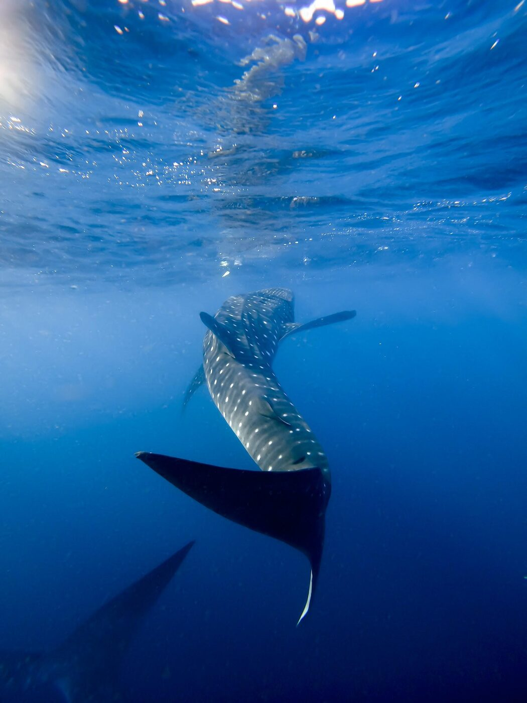
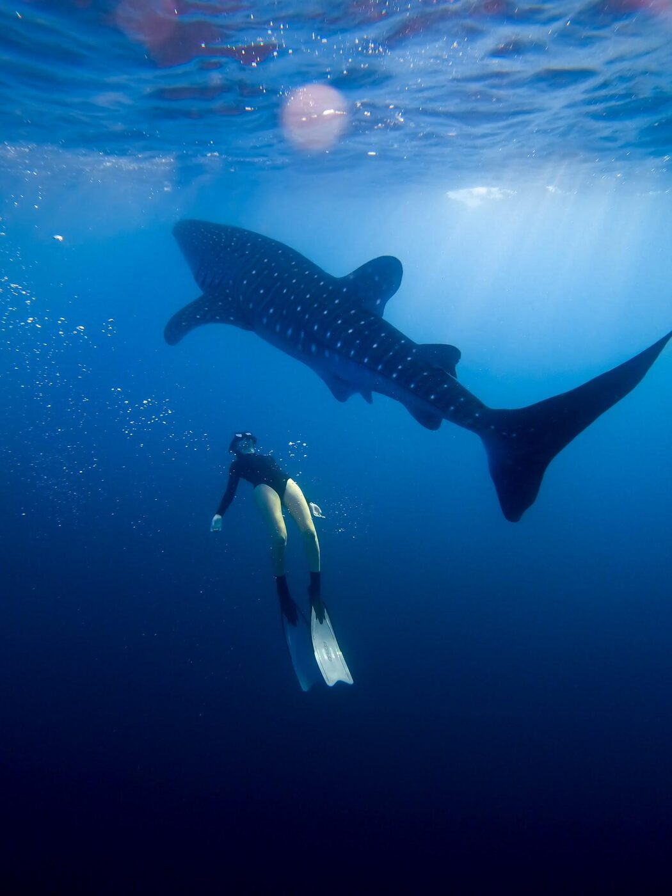
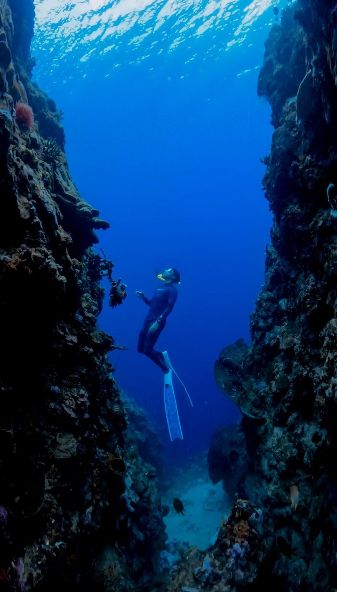
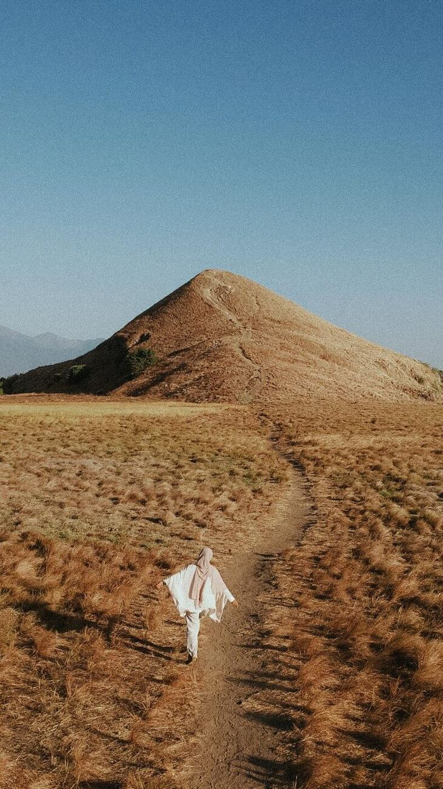

Eye to eye with a giant.
At first light the whale sharks of Saleh Bay gather near the fishing platforms. Slip in beside them — 6 to 8 metres of gentle giant, gliding right past you.
Three days across wild Sumbawa — slip into Saleh Bay at first light beside whale sharks, snorkel the reefs of Moyo Island, trek to Mata Jitu waterfall, and cross golden savanna few travelers ever reach.
Typical response under 8 minutes · EN / ID
From the overland drive to the dawn boat and the waterfall finish — here's how it flows.
Sumbawa is raw, wide and quiet — and Saleh Bay is one of the last places on earth you can meet whale sharks this close, this calm.
At first light the whale sharks of Saleh Bay gather near the fishing platforms. Slip in beside them — 6 to 8 metres of gentle giant, gliding right past you.
Snorkel the coral of Moyo Island, drift over turtles, then trek to the tiered blue pools of Mata Jitu — one of Indonesia's most beautiful waterfalls.
Your morning with the whale sharks is documented on GoPro — so you leave Sumbawa with the footage, not just the memory.
A remote, early-start adventure — the boats, the timing and the local team are what make it work.
Private boat out to the whale sharks and a private speedboat to Moyo — no crowded shared decks.
Booked straight from the operator on the ground. No platform call centre, no markup layer.
3 days of transport, 2 nights hotel, snorkeling equipment, entrance fees and breakfast at sea.
From 4 guests, capped small. Private departures on request for families & friends.




Times are indicative — Sumbawa runs on tides and light, and we confirm your schedule before departure.
One price, one local team — from the airport pickup to the last waterfall.
Not included: flights to/from Sumbawa Besar, personal expenses, tips and travel insurance.
Book straight from the local Sumbawa team — no platform, no markup layer.
Shared small-group departure. Ideal for couples, friends and small groups.
Your own dates and boats — perfect for families and bigger groups.
"Floating next to a whale shark at sunrise rearranges something in you. Add Moyo's reefs and a waterfall, and it's the most complete few days of ocean travel in Indonesia."
Small departures, best in season — tell us your dates and we'll hold a spot and advise the best window.
Confirmed in minutes · No platform fees